【制造业工厂万里行】2023郑州工博会首轮地推全面启动！
首页 / 【制造业工厂万里行】2023郑州工博会首轮地推全面启动！【制造业工厂万里行】2023第19届郑州工博会第一阶段地推工作火力全开，在此我们将先后深入河南省各个地市郑州、洛阳、许昌、新乡、南阳、安阳、鹤壁、驻马店等及省外重要地市，进行大规模、一对一买家邀约，走访产业集聚地、产业园区、市场等，与专业买家线下面对面交流，真实了解企业实际生产情况，精准对接观众需求。
全面地推将分为三轮进行，将持续至展会开展，累计走访3000+产业集聚地及工厂，辐射20000+精准人群，开展高精准率、高触达率的实效推广。
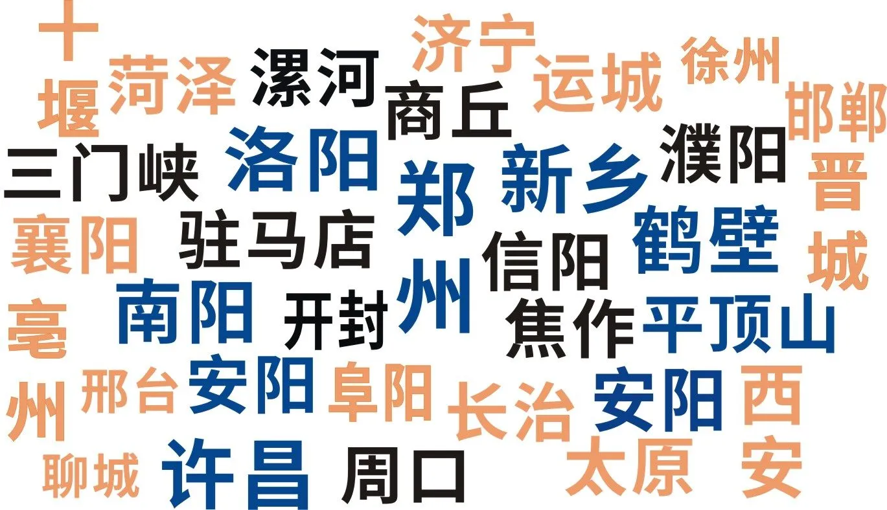
首轮地推组建三支专业地推团队，于2月23日出发启程，前往洛阳、许昌等地通过点对点精准投递，搭建有效果、有深度、有价值的展前实效预热渠道，助力展会的品牌力、影响力增幅，提前释放展会与专业观众的有效联动，扩大展会市场影响力。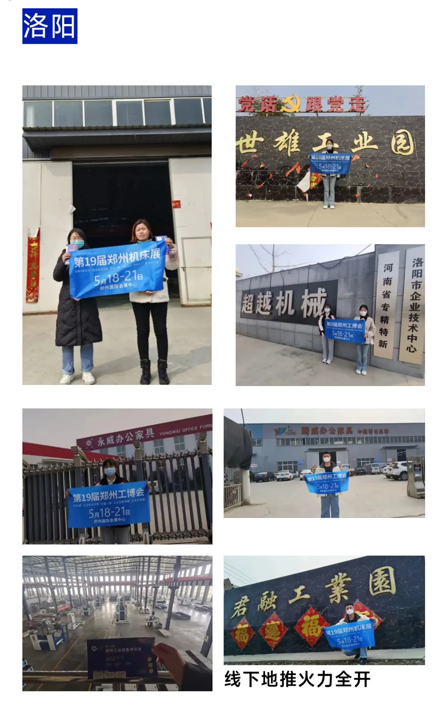 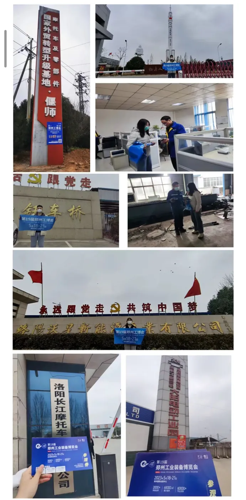 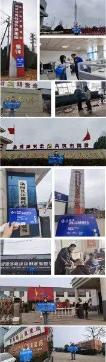 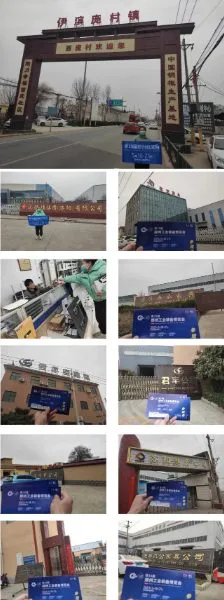 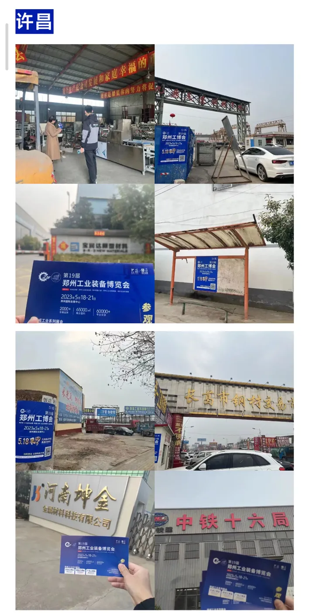 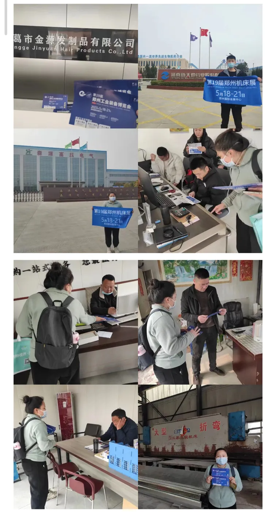
除了线下地推团队，线上宣传各项工作全面铺开，宣传力度持续加强，短短一周的时间，整体观众参观报名预登记较去年增长了30%，吸引了大批高质量高精准观众，宇通、富士康、郑煤机、平原光电、卫华集团、精益达汽车、格力、明泰铝业、铁建铁路轨道配件、郑州日产、比亚迪、豫新汽车、郑飞科技、淅减汽车减振、西峡县内燃机进排气管等知名企业将到场参观。
本届展会联合大众主流媒体，和讯网、搜狐、网易、新浪、中国日报网、中国经营网、中华网、中国工业网及行业权威媒体、新媒体等，对展会的前、中、后期进行全过程、全方位、多层次的宣传报道，构筑全媒体传播矩阵。依托展会百万买家数据库资源，通过百度、抖音、微信、头条等平台进行全网集中覆盖，直击制造精准人群，拓宽优质观众。
百度等新媒体广告
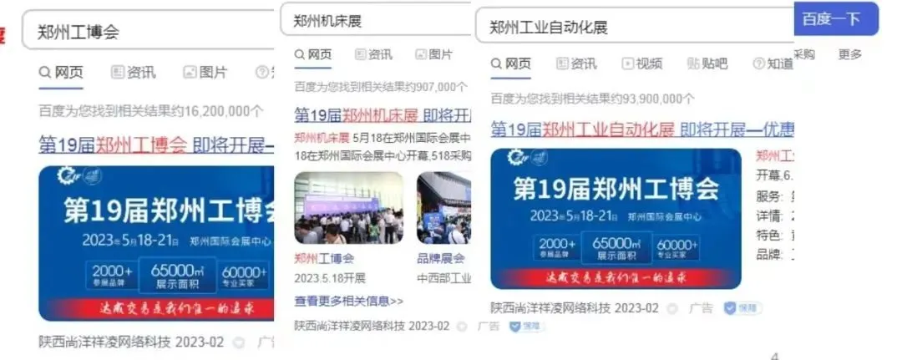
主流媒体
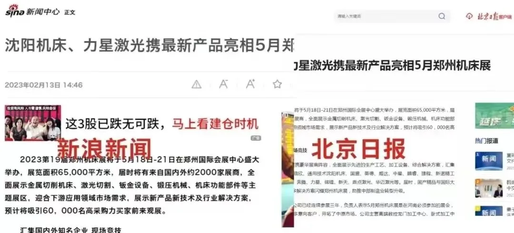 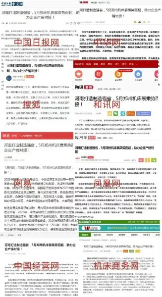
行业媒体
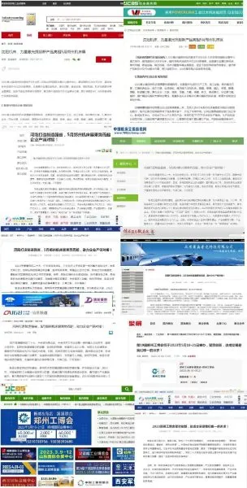
在接下来的时间里，组委会邀约团队将继续扩大宣传力度，全力整合行业资源，持续发力线上线下多渠道推广，精准、快速、有效传播展会信息，进一步夯实买家宣传工作，以保证展商参展效益最大化，全力以赴打造一场高品质盛会！